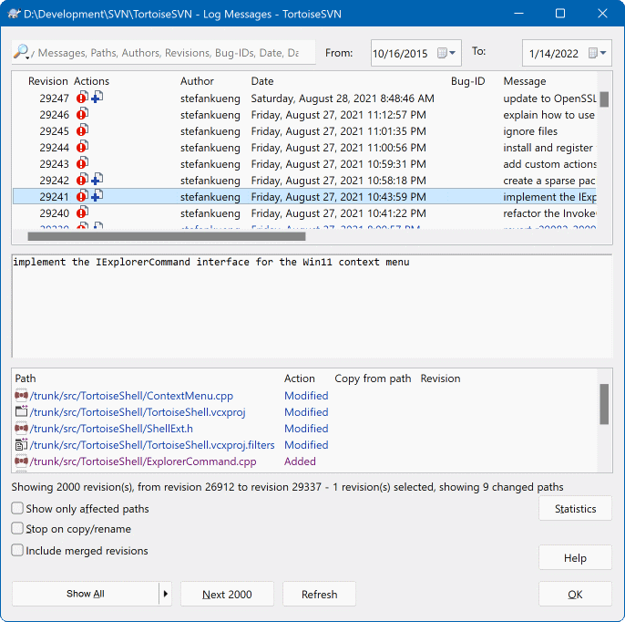
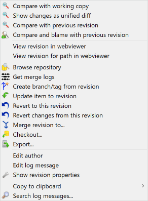
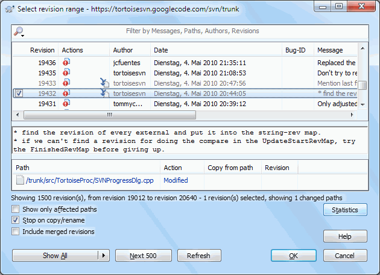
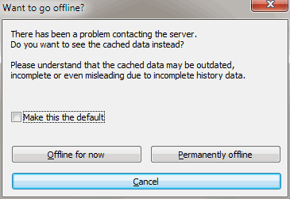

8查看历史：Log 对话框详解
查历史是 SVN 最有价值的功能之一。它能回答两个每天都在发生的问题：
「这行代码谁写的」和「这个功能是什么时候上线的」。 这一节把 Show log 对话框从上到下拆开讲清楚。
为什么值得花时间学这个对话框
出问题时，SVN 的日志能告诉你三件事：谁改的（哪个同事）、 什么时候改的（哪次提交）、改了什么（这次提交动了哪些文件、动了哪几行）。 没有它，你只能靠问同事和翻聊天记录。
而且这些信息不可篡改——每次提交都会在服务器上留下一条记录， 连提交时写的说明文字都一起存着。所以提交说明写清楚，是给未来的自己留后路。
打开日志对话框
SHOW LOG三种打开方式，按需要选
对着项目文件夹右键（最常用）
选 TortoiseSVN → Show log。
对整个文件夹查，能看到这个目录下所有文件的改动历史。
对着单个文件右键
菜单里同样有
Show log。 这样打开的日志只包含这一个文件，范围小、看得快， 适合查「这个文件最近被谁动过」。
从更新或提交的进度窗口里点过去
更新完成或提交完成后，进度窗口里也能直接跳到日志。 好处是顺手接着看，不用回到资源管理器重新右键。
对话框全貌：四个区域
◈Show log 日志对话框（点击图可放大）Show Log

这个对话框是本节的主角，从上到下分成四块，每块干一件事：
① 顶部工具栏——一排小按钮，控制「取多少条历史」「怎么显示」「怎么搜」。 最左边是 Refresh（重新拉一次日志，同事刚提交完想看到最新记录就点它）； 旁边是取更多历史的按钮（一次拉一批，比如 Next 100）， 以及 Show All（一次性把全部历史拉下来，项目久了会很慢）； 再往右是 Statistics（提交量统计，按作者出图）和搜索相关的按钮。
② 中间上半部分：提交历史列表——这是日志的主体，一行就是一次提交， 每行从左到右固定四列：版本号（Revision，那个不断变大的数字）、 作者（谁提交的）、日期时间、日志消息（提交时填的说明）。 看这一栏就够了：想知道某功能哪天上线，扫日期列就行。
③ 中间下半部分：文件列表——在历史列表里选中某一行， 这里就会列出那次提交动了哪些文件。 每个文件名前面带一个字母标记：A=本次新增（Added）、 M=本次修改（Modified）、D=本次删除（Deleted）。 A/M/D 一眼就看出这次提交的性质——全是 A 说明在加新功能，出现 D 说明删了东西。
④ 底部：搜索框——在历史消息和作者里做关键字过滤。 想找「修复登录」相关的提交，直接敲「登录」，列表立刻收窄。 删掉关键字就恢复全部。比用眼睛一行行扫快得多，尤其是历史有几千条的时候。
① 顶部工具栏——一排小按钮，控制「取多少条历史」「怎么显示」「怎么搜」。 最左边是 Refresh（重新拉一次日志，同事刚提交完想看到最新记录就点它）； 旁边是取更多历史的按钮（一次拉一批，比如 Next 100）， 以及 Show All（一次性把全部历史拉下来，项目久了会很慢）； 再往右是 Statistics（提交量统计，按作者出图）和搜索相关的按钮。
② 中间上半部分：提交历史列表——这是日志的主体，一行就是一次提交， 每行从左到右固定四列：版本号（Revision，那个不断变大的数字）、 作者（谁提交的）、日期时间、日志消息（提交时填的说明）。 看这一栏就够了：想知道某功能哪天上线，扫日期列就行。
③ 中间下半部分：文件列表——在历史列表里选中某一行， 这里就会列出那次提交动了哪些文件。 每个文件名前面带一个字母标记：A=本次新增（Added）、 M=本次修改（Modified）、D=本次删除（Deleted）。 A/M/D 一眼就看出这次提交的性质——全是 A 说明在加新功能，出现 D 说明删了东西。
④ 底部：搜索框——在历史消息和作者里做关键字过滤。 想找「修复登录」相关的提交，直接敲「登录」，列表立刻收窄。 删掉关键字就恢复全部。比用眼睛一行行扫快得多，尤其是历史有几千条的时候。
| 区域 | 你要看的信息 | 怎么用 |
|---|---|---|
| 提交历史列表 上方 |
版本号 / 作者 / 日期 / 说明 | 一行一次提交。先按时间扫，找到大致范围，再点开看细节。 越大越新的版本在最上面。 |
| 文件列表 下方 |
这次改了哪些文件 | 选中一个版本后才有内容。看 A / M / D 前缀判断这次提交干了什么。 |
| 搜索框 底部 |
关键字 | 按关键字过滤提交记录。找「某个人什么时候改过这块」时特别省事。 |
| 顶部工具按钮 | 刷新 / 取更多 / 统计 | 刚提交完想看到新记录 → 点刷新；历史拉得不够 → 点取更多。 |
右键菜单：真正干活的地方
在中间历史列表的某一行上点右键，会弹出一整套针对「这一次提交」的操作。 这才是日志对话框最有用的部分——上面的列表只是用来挑目标。
◈在某个版本上右键弹出的菜单Log · Context Menu

菜单里的项目按用途分成几类，先认分类，再记具体项：
• 看内容类：Compare with working copy（拿这个版本和你当前的文件比）、 Show changes as unified diff（把这个版本改了什么、一屏列出来，不用点开文件就能扫一眼）、 Blame（逐行追责，见下文）
• 比对两个版本类：先在列表里按住 Ctrl 选中两条，再右键，就能看到比对选项
• 撤销类：Revert changes from this revision（把这次提交的改动抵消掉，第 9 节详细讲）
• 把信息拿出去类：Copy to clipboard（把版本号、作者、说明复制走， 写周报、贴缺陷单时很有用）、Create branch/tag from revision
• 取回内容类：Save revision to...（把这个历史版本另存到别处，不动你的工作副本）
注意：在下方文件列表里的文件上右键，菜单会长得不一样—— 那里是针对「这一个文件在这一次提交里」的操作。两层右键别搞混。
• 看内容类：Compare with working copy（拿这个版本和你当前的文件比）、 Show changes as unified diff（把这个版本改了什么、一屏列出来，不用点开文件就能扫一眼）、 Blame（逐行追责，见下文）
• 比对两个版本类：先在列表里按住 Ctrl 选中两条，再右键，就能看到比对选项
• 撤销类：Revert changes from this revision（把这次提交的改动抵消掉，第 9 节详细讲）
• 把信息拿出去类：Copy to clipboard（把版本号、作者、说明复制走， 写周报、贴缺陷单时很有用）、Create branch/tag from revision
• 取回内容类：Save revision to...（把这个历史版本另存到别处，不动你的工作副本）
注意：在下方文件列表里的文件上右键，菜单会长得不一样—— 那里是针对「这一个文件在这一次提交里」的操作。两层右键别搞混。
四个最实用的操作
常用查历史的四个高频动作
双击文件 → 看它在这个版本里改了什么
在历史列表里选中一个版本，下方文件列表会出现这次提交涉及的文件。
对着其中某个文件双击，就会打开比对窗口， 把「这个文件在这次提交前后」的差异逐行列出来。
这是最常用的动作：先看版本说明，再双击确认「到底改了哪几行」。 比对窗口怎么读，见第 6 节。
这是最常用的动作：先看版本说明，再双击确认「到底改了哪几行」。 比对窗口怎么读，见第 6 节。
选中两个版本 → 右键 → Compare revisions
按住 Ctrl 在历史列表里点两个版本（可以隔很远）， 然后在选中项上右键，选
它给你的是两个版本之间的全部差异， 而不只是某一次提交——适合回答「这两周里这个模块一共改了什么」这种问题。 弹出来的对话框会先列出有哪些文件变了，双击其中任何一个再进比对窗口。
Compare revisions。它给你的是两个版本之间的全部差异， 而不只是某一次提交——适合回答「这两周里这个模块一共改了什么」这种问题。 弹出来的对话框会先列出有哪些文件变了，双击其中任何一个再进比对窗口。
Blame：逐行追责，查「这行是谁写的」
在日志窗口里选 Blame（也可以直接对文件右键 →
TortoiseSVN → Blame...），
它会打开一个新窗口，每一行代码前面都标着：这行是哪个版本、谁写的、什么时候写的。
把鼠标停在某一行上，还能看到那次提交的说明。想知道这行诡异的代码为什么会变成这样，就靠它。
把鼠标停在某一行上，还能看到那次提交的说明。想知道这行诡异的代码为什么会变成这样，就靠它。
按作者 / 日期 / 关键字筛选
底部搜索框敲关键字，把提交记录过滤成一个小范围；
再配合历史列表自带的日期和作者列，就能快速缩到「某人在某段时间改的那几次提交」。
筛选只影响显示，不会改动任何东西，随便试。
筛选只影响显示，不会改动任何东西，随便试。
Blame 正确用法：找人不是找茬
Blame 这个名字听着像兴师问罪，但在团队里它其实是沟通工具：
- 应该做：查到某行是同事写的 → 看看那次提交的说明 → 拿着版本号和说明去问他， 他一看就知道你指的是哪次改动，沟通成本极低。
- 不该做：把「这行是谁写的」当成追责武器。代码是团队一起演进出来的， 每一行都有当时的历史原因。
- 还有一种常见情况：Blame 显示这行属于一次「格式整理」提交——说明真正的作者更早， 你可以顺着那次提交继续往前翻。
合并追踪：这个改动合过来没有？
项目用了分支之后，日志里会多出一层信息：哪些版本已经被合并到当前这条线上了。 TortoiseSVN 会把它们灰显出来。
◈带合并追踪的日志（已合并的版本灰显）Merge Tracking

看这张图的关键是颜色的差别：
• 正常显示的版本——这些改动还没有合到当前这条线上
• 灰显的版本——这些改动已经合过来了
所以「这个 bug 修复合过来没有」这种问题，答案不用问人： 在日志里瞄一眼那行是黑的还是灰的就行。灰的 = 已经有了。
这个功能依赖 SVN 的合并追踪（merge tracking）记录——也就是说， 合并必须通过
• 正常显示的版本——这些改动还没有合到当前这条线上
• 灰显的版本——这些改动已经合过来了
所以「这个 bug 修复合过来没有」这种问题，答案不用问人： 在日志里瞄一眼那行是黑的还是灰的就行。灰的 = 已经有了。
这个功能依赖 SVN 的合并追踪（merge tracking）记录——也就是说， 合并必须通过
Merge 功能做，它才会被记下来。
如果是手工复制文件「假装合并」，日志里就看不出来，这也是要按规矩做合并的原因之一。
离线也能看日志
◈日志缓存（连不上服务器时）Log Cache

TortoiseSVN 会把查过的日志在本地缓存一份。
好处有两个：一是快（第二次打开同一段历史几乎是瞬间的），
二是服务器连不上或者在家没 VPN 时，仍然能看到之前拉过的历史记录。
缓存只是加速用的，它不会替你做任何操作。如果怀疑记录不是最新的（同事刚提交）， 在日志窗口点一下 Refresh 重新拉一次即可。平时不用管它。
缓存只是加速用的，它不会替你做任何操作。如果怀疑记录不是最新的（同事刚提交）， 在日志窗口点一下 Refresh 重新拉一次即可。平时不用管它。
高频场景：线上出 bug，怎么快速定位是哪次提交引入的
这是 Show log 最经典的实战用法，整套流程全在鼠标上：
- 先确定「出问题的文件名」——从错误日志或用户描述里拿到那个文件/那个界面。
- 对着这个文件右键 →
Show log， 打开的就是这一个文件的完整改动史（范围越小越快）。 - 看最上面一条：Bug 通常是最近才出现的，先怀疑最近的提交。 读它的日志消息，看是不是动了相关的地方。
- 双击那个版本里的文件，比对窗口会把改动的行列出来。 一眼就能看出「这行本来是对的，被改成这样了」——凶手抓到。
- 还确定不了就二分：在列表里选中两个相隔较远的版本 →
右键
Compare revisions，看这段区间一共改了什么，逐步缩小范围。 - 锁定之后：把版本号、作者、提交说明复制下来（右键 → Copy to clipboard），发给对应的同事。 后面怎么退回来，见第 9 节。
这个流程的核心是：不要凭记忆猜，让日志告诉你。
看日志时的两个小坑
- 别一上来就点「Show All」。大项目的全部历史可能几万条，拉起来慢， 还容易卡。先用默认的一批，不够再点「取更多」，最后才考虑全部。
- 日志说明是人的字，可能写得含糊。「修改」「更新」「fix」这种说明查不出任何东西。 所以你自己提交时，说明要写到「以后搜得到」的程度—— 把功能名、模块名、问题编号写进去。